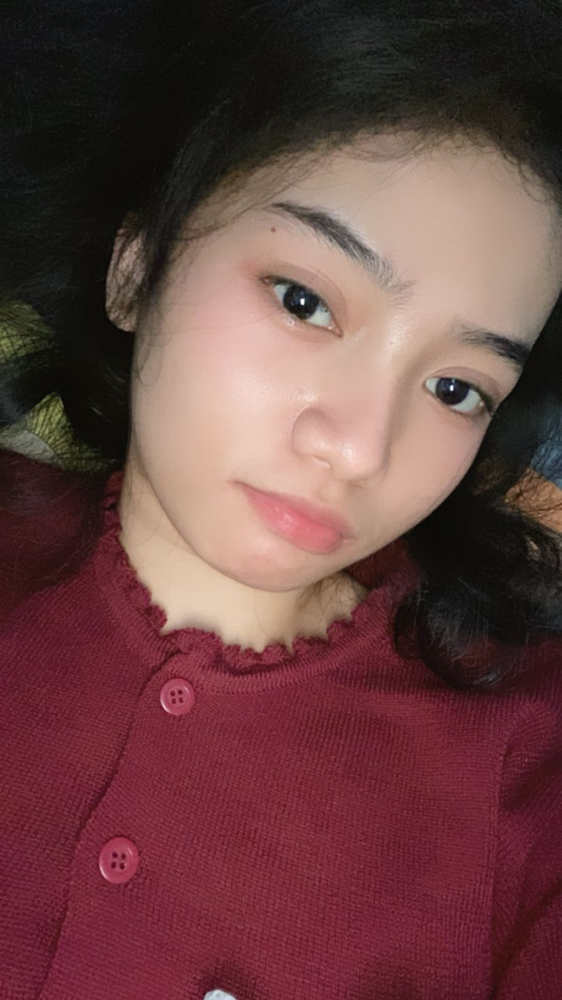
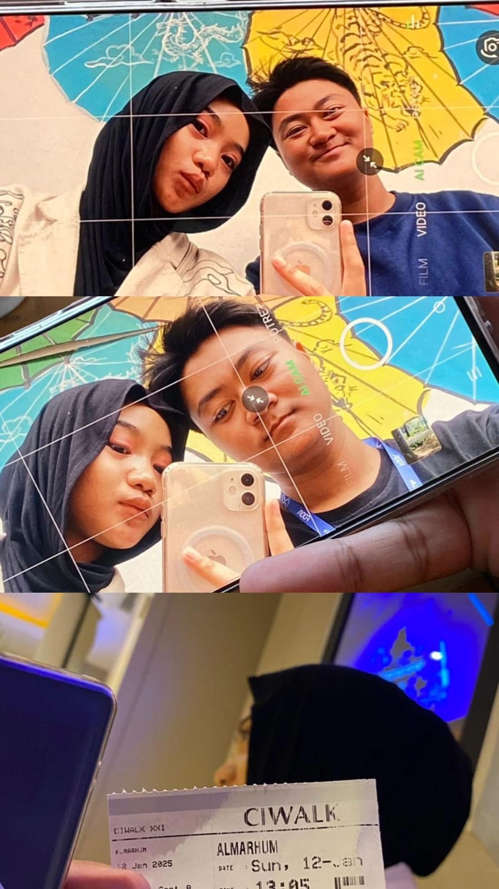
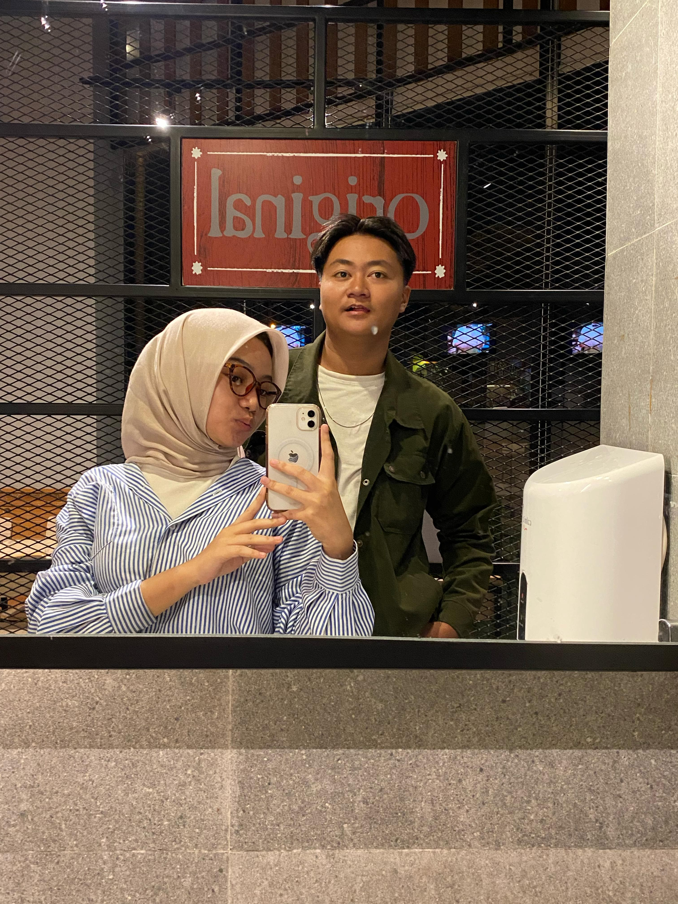
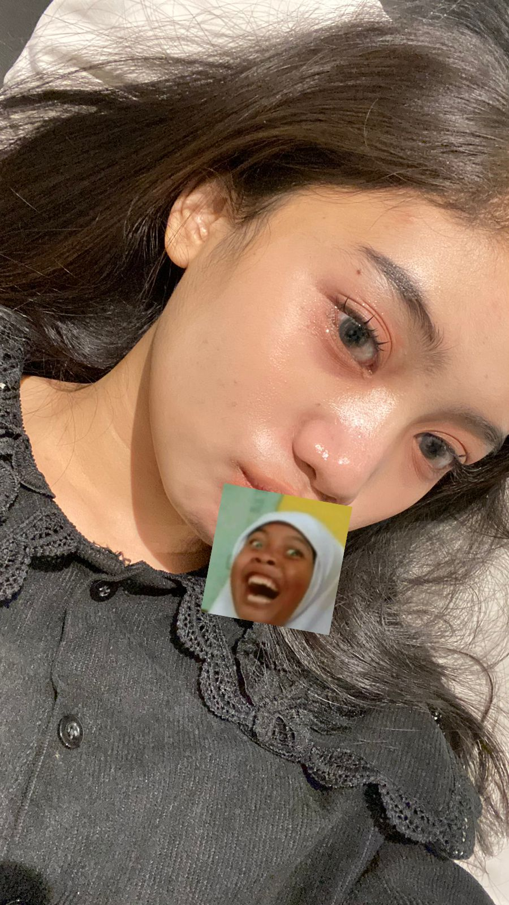

Maaf telat akuu ngucapinnyaa hehe, akuu ada kilas balik tau buat kenang
masa masa kitaa coba pencet...🌸
✨ Ini Momen Pertama Kita ✨
Maaf aku vidio in nya ga jelas hehee. Kamu aku jemput di Stasiun Cimahi,
tapi entah gimana hari itu kamu cantikk banget terus kamu pertama kali
senyum ke aku sampe aku inget sampe sekarang hehe.
Terus kita ngobrol di motor biru kesayangan aku wkwk. Sebenernya aku waktu itu malu banget ditambah seneng
banget bisa ketemu kamuuu hehe 😳 Kita lanjut ke kenangan kita yu...
💖💗💘💞💕
📸 Kenangan Kita 📸

Ini pertama kali kamu ngirim pap ke aku. Disini aku seneng banget bisa dapet pap kamu terus aku
pikir mimpi apaa ya bisa dapet pap dari cinderella entah dari kerajaan mana hahaha.

Nah disinii pertama kali kita fotbar, meskipun mata kamu lagi alergi gara-gara debu tapi tetep
cantik koo hehee.

Nah terus ini terakhir kali kita fotbar lagi sebelum kamu ke Tasik dan ada problem yang aku ga mau
ulang lagi. Di sini kamu abis pulang kerja tetep maksain ketemu aku, makasih yaa sayangg. 💖

Nahh ini dia pap kamu setelah kita baikan. Kalo ditanya soal cantikan mana ya jelas kecantikan
kamu itu nggak pernah berkurang sedikitpun dari awal sampe sekarang.
💌 Buat Kamu yaa Nazwaa Desriaa yang aku sayangg 💌
Terima kasih udah jadi bagian dari hidup aku.
Maaf kalau kadang aku ngeselin atau bikin kamu bete 😅
Tapi percaya deh... aku selalu sayang kamu, dan bakal terus berjuang buat hubungan ini 💖
Kamu itu hadiah terbaik yang pernah aku dapet. Dan aku nggak mau kehilangan kamu, oke? Dan ada satu lagi,
jangan selalu sedih :'
Aku tau kamu sekarang lagi di posisi terrendah kamu tapi aku yakin kamu pasti
bisa ngelewatinya. Semangat ya cantikk kamu itu nggak sendiri sayang, ada aku yang selalu support kamu
gimana pun keadaannya. Jangan mikir hidup kamu nggak berguna, kamu itu berguna kok. Semangat aja, ada aku
selalu untuk kamu sayang, meskipun aku kadang suka nyari masalah bikin kamu kesel badmood. Tapi percaya
sayang, aku beruntung bisa kenal sama kamu. Aku yakin meskipun nanti hubungan kita gimana ke depannya,
aku selalu doain semoga berujung baik. Kita jalanin aja dulu bareng-bareng, saling ngertiin, ilangin ego,
huhuu jadi pengen nangis wkwk. Udah ah itu aja dari aku, I love you sayangku 💗